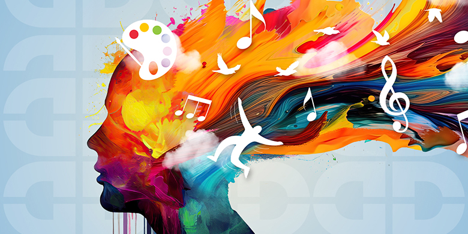
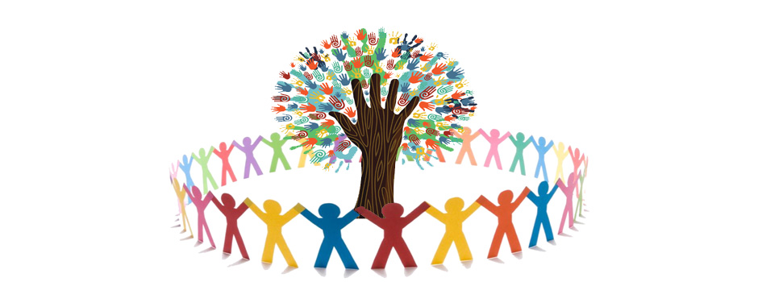
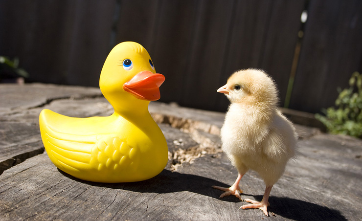
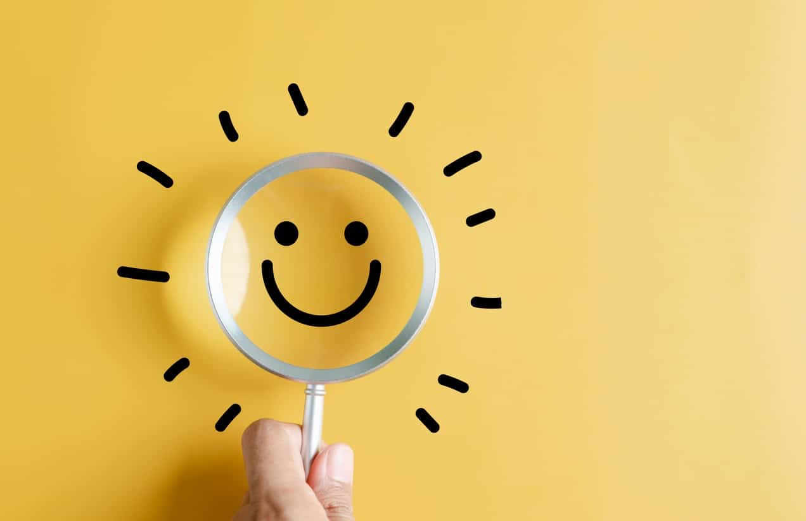
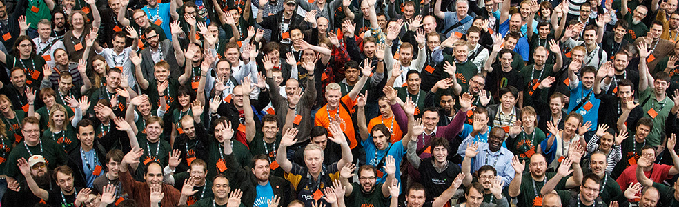
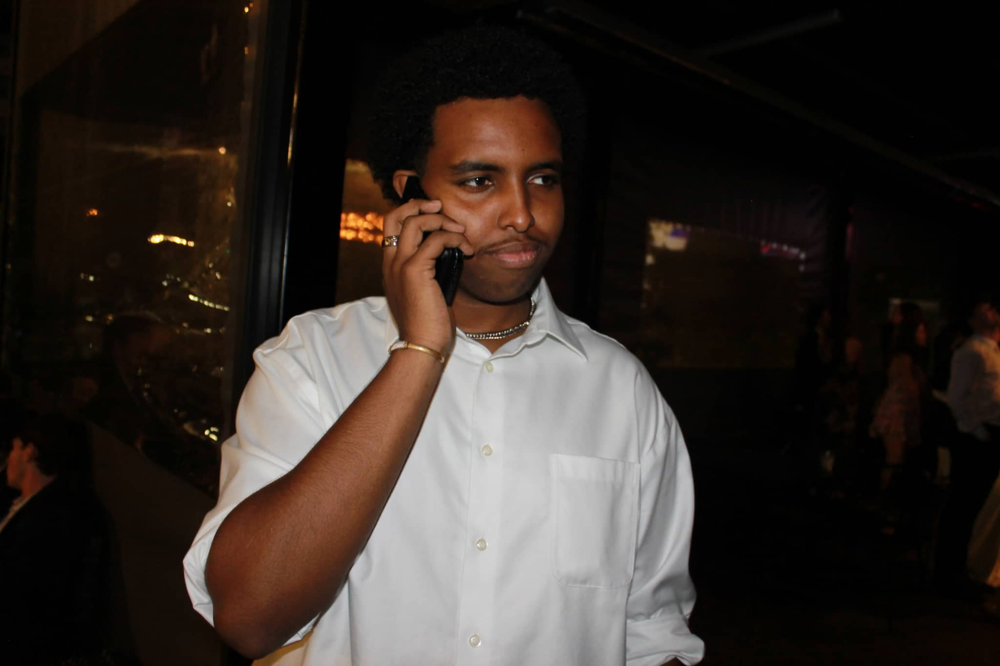
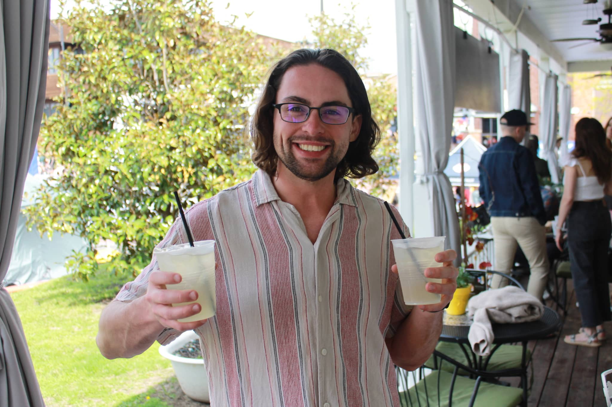
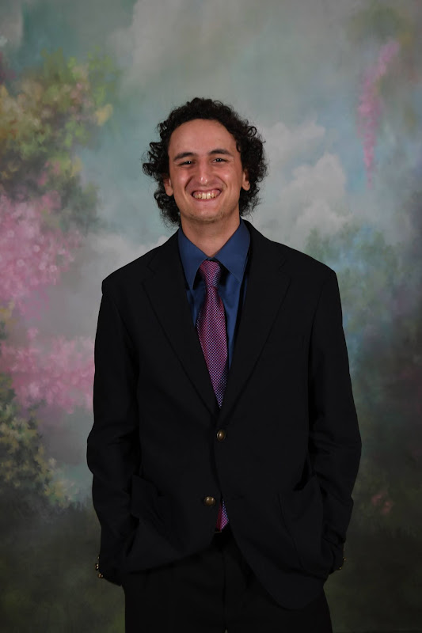

Good things are still happening all around us. We're here to tell those stories.
FeelGoodNews started with a simple frustration, every time we opened our phones, the news was relentlessly negative. Disaster, conflict, outrage, repeat. It was exhausting, and we knew we weren't alone in feeling that way.
So two friends decided to do something about it. We believed then, as we do now, that the world is full of remarkable people doing remarkable things, and that those stories deserve just as much of the spotlight as the bad ones.
Project Uplift was born out of that belief. We partnered with talented journalists who share our vision, and together we set out to build a place where people could come every day and leave feeling a little better about the world.
To give people a daily reason to believe the world is good through honest, uplifting stories told with care.
We don't ignore reality. We just choose to shine a light on the parts of it that inspire us, because we believe what you focus on grows.
Constant exposure to negative news isn't just unpleasant, research shows it has a real impact on mental health, increasing stress, anxiety, and feelings of helplessness. We exist to offer an alternative.

A steady diet of negative news raises cortisol and stress levels. Uplifting stories have the opposite effect, they genuinely improve how you feel.

Good news stories remind us that humans are fundamentally kind and generous. They build social trust and a sense of shared humanity.
When people see others doing good, they're more likely to do good themselves. Positive stories are contagious in the best possible way.

Every story we publish is real, verified, and told honestly. We never sensationalize or exaggerate.

We actively seek out the good. Not because we're naive, but because we believe it deserves more airtime.

We celebrate everyday people making a difference, in their neighbourhoods, cities, and across the world.
Good news is only good if it's true. Our journalists fact-check every story before it goes live.
The people behind the good news.

You must be wondering how I got here. One part frustration with doom-scrolling, one part big idea, and one very long conversation with a friend, and suddenly we were building a news site. Still figuring it out, but having the best time doing it.

You must be wondering how I got here. Honestly? A phone call, a wild idea, and the realization that someone had to do something about all this bad news. Turns out that someone was us. No regrets.

Jake is a recent graduate of the University of Missouri's School of Journalism, earning a Bachelor's in Strategic Communication. He was one of 33 students selected for MOJO Ad, a student-staffed agency where he presented a full marketing campaign to Bath & Body Works executives. He is currently training for a marathon, and yes, he is a Guinness World Record setter.
Have an uplifting story to share, or just want to follow along? We'd love to hear from you.